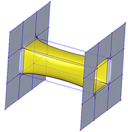
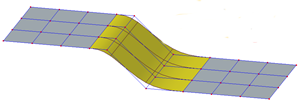
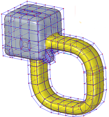
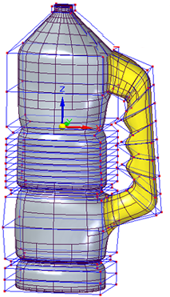
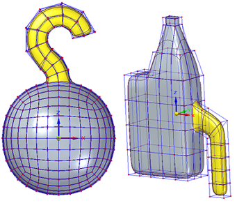

Bridge command
In the Subdivision Modeling environment, the Home tab→Modify group→Bridge command  connects the edges of selected cage elements by bridging the space between them with
a lofted structure. You can define a curve to control the shape of the bridge.
connects the edges of selected cage elements by bridging the space between them with
a lofted structure. You can define a curve to control the shape of the bridge.
Use the Bridge command to add feature-like modifications, such as handles or transitional features, or to create cutouts in the subdivision bodies being modified.
You can create a bridge that has two sides, as you would think of a typical structure that spans a river, or you can create a one-sided bridge that connects to your subdivision body and terminates in space.
For more information, see Connect cage faces or edges with a bridge.
Two-sided bridges
The following bridges have a start section and an end section that connect to different faces at both ends.
This bridge was defined between two cage bodies, by selecting one input face on each. The bridge was used to create a cutout on the connected cage bodies.

This bridge was defined by:
-
Two cage bodies,
-
Selecting three input edges at the start and at the end of the bridge,
-
Using linear or curved sketch elements to define the bridge path.

For this bridge, two input faces were selected at each end on the same body cage, and a sketch curve defines the bridge path.

This thermos handle was defined by:
-
One cage body,
-
Selecting one input face at the start and one at the end of the bridge,
-
Using linear sketch elements to define the handle shape.

One-sided bridges
You can use a one-sided bridge to create the following type of lofted structure:

How do I
Subdivision Modeling workflowMove cage elements
Move using Quick Move
Use symmetric mode in Subdivision Modeling
Scale a subdivision model
Split subdivision model faces
Split faces with offset
Offset cage faces
Connect cage faces or edges with a bridge
Delete and fill cage faces
Align a shape to a curve
Learn more
Introduction to Subdivision ModelingUsing PathFinder with subdivision models
Working with cage elements
Creating subdivision features
Working with subdivision features
Moving and rotating cage elements
Look up more details
Subdivision Modeling commandBox command in Subdivision Modeling
Box command bar
Cylinder command in Subdivision Modeling
Cylinder command bar
Sphere command in Subdivision Modeling
Sphere command bar
Torus command
Torus command bar
Scale command in Subdivision Modeling
Blend command
Show Blend Values command
Split command
Split with Offset command
Align to Curve command
Cage Style command